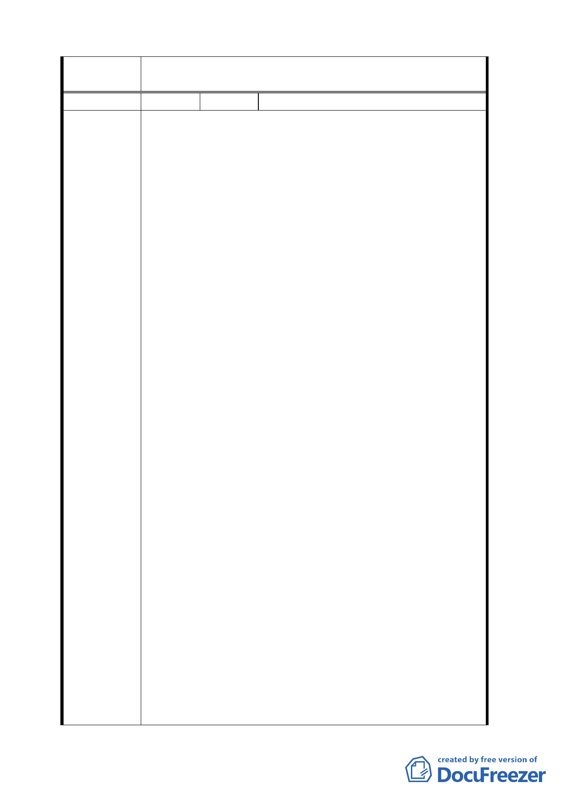

委員會
決議
編號
陳情理由
本案都市計畫範圍及更新地區範圍，依市府所送書、圖
所示範圍通過。
2 陳情人 林上閔
1.吳興街、松仁路、松仁路 308 巷、吳興街 583 巷，與
吳興街 600 巷所圍成之區域在鄰里關係、人文特色、
地理、周邊地形等社會經濟及自然環境之條件上原屬
同一區域、同一街廓、同一生活圈，同樣都有巷弄狹
窄、居住空間過小、環境惡劣、停車空間不足，及建
築物年代久遠窳陋且鄰棟間隔不足等問題，影響防火
功能、不利交通順暢及公共衛生、還衍生治安死角，
嚴重妨害公共安全及社會治安。但是經查本次公告更
新地區並未包含其中吳興街、吳興街 583 巷、吳興街
583 巷 4 弄，及吳興街 600 巷所圍成之區塊（以下簡
稱「建議範圍」，如附件 1 及附件 2 圖示），以致未能
藉由一併整體規劃更新上開地區，而真正改善該區域
整體居住環境，使更新效益大打折扣。
2.如上所述，本案建議範圍緊臨本次公告更新地區，且
屬同一生活圈鄰里街廓，若未能一併納入本次擬更新
地區將面臨下列問題：
（1）原屬一體之自來水、電力、電信、瓦斯、排水等
公共管線，及相關公共設施將無法一併規畫更
新，獨留建議範圍使用老舊管線。
（2）更新區域重建施工時因大面積開挖將嚴重影響及
破壞建議範圍之建築物地基及結構，危及居民住
家生命財產安全。
（3）更新重建基地面積大，工期將甚為冗長，施工期
間產生之噪音、空氣污染，及施工車輛頻繁進出
將嚴重影響建議地區居民生活品質。
（4）更新重建之建築物因容積獎勵將興建超高大樓，
建成後必將影響比鄰之建議範圍內居民的日照
權、採光權，及造成視覺壓迫等。
（5）未來建議範圍內居民之交通進出動線，及自行改
建的空間將受限制與壓縮。
（6）僅留建議範圍之一角區域未同步更新，更新後該
區域相形將更為老舊窳陋，反過來將嚴重影響已
經更新區域之景觀。
3.基於上述理由，我們以比鄰本次公告更新地區之利害
關係人身分，強烈建議將以下建議辦法所述之建議範
圍納入本次公告之都市更新地區範圍，俾該緊臨且同
9